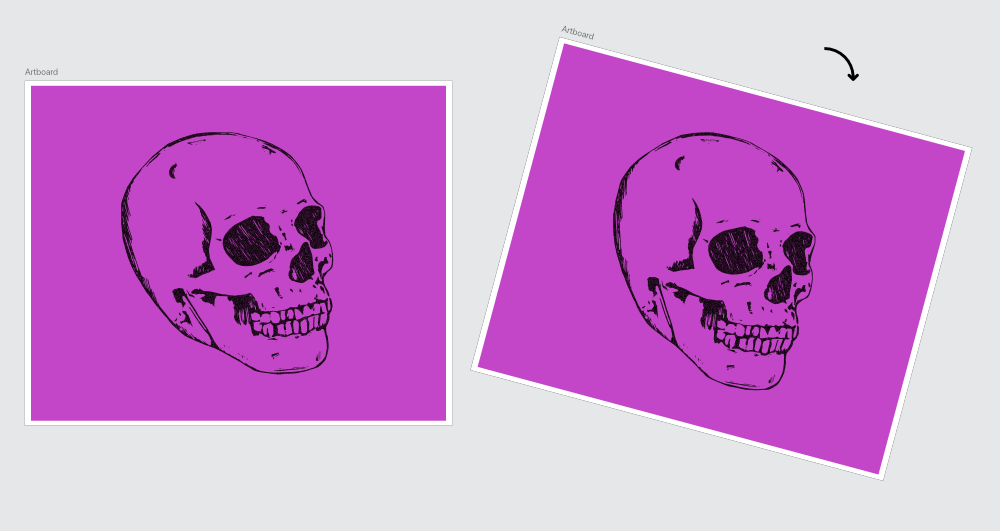

Rather than rotating the document permanently, you can rotate the document view instead. This allows you to view your document from a different angle without manipulating its layout.

About document view rotation
Being able to rotate the document view is beneficial for a number of applications:
Brush and fine detail work
Product design (e.g., product box/packaging layouts with content at 90/180 degree angles)
Tablet-assisted design (drawing at angles)
To rotate the document view:
-click in the Document View, then select Rotate Left or Rotate Right. The document view will be rotated in 15° increments. Alternatively, use the View menu for equivalent commands.
To reset the document view back to its original rotation:
Do one of the following:
-click in the Document View (or enter View menu), select Reset Rotation.
Press R.
Press +++R.
To switch on/off document view rotation (for Trackpads):
From Affinity Designer>Preferences (Tools option), check or uncheck Enable Canvas Rotation with Trackpad.
To switch on/off document view rotation using a scroll wheel:
From Affinity Designer>Preferences (Tools option), check or uncheck Enable canvas rotation with +scroll wheel.
To switch on/off document view rotation using a scroll wheel:
From Edit>Preferences (Tools option), check or uncheck Enable canvas rotation with +scroll wheel.